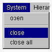
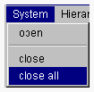

クラスブラウザを閉じる
クラスブラウザを閉じる場合には System メニューを使用してください。
タイトルバーの ボタンを使用してクラスブラウザを終了させることはできません。
ボタンを使用してクラスブラウザを終了させることはできません。
クラスブラウザを閉じる方法は2種類あります。
- 1つのクラスブラウザを閉じる
- 現在開かれているすべてのクラスブラウザを閉じる

1つのクラスブラウザを閉じる
- 閉じたいクラスブラウザの System メニューから close メニュー項目を選択してください。

- 上記操作を行ったクラスブラウザが閉じます。
すべてのクラスブラウザを閉じる
- クラスブラウザの System メニューから close all メニュー項目を選択してください。

- 現在開かれているすべてのクラスブラウザが閉じます。
(c) 1996-1998 IPA, ETL, AT21, FSIABC, FXIS,
InArc, MRI, NUL, SBC, Sharp, TEC, TIS. All rights reserved.